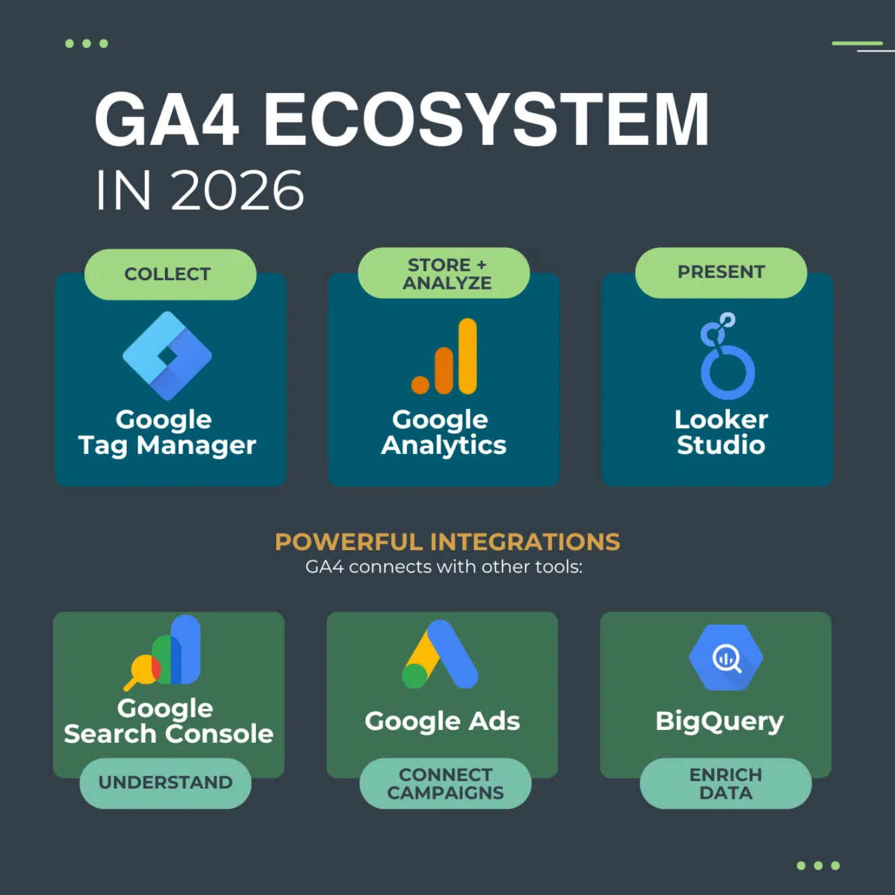
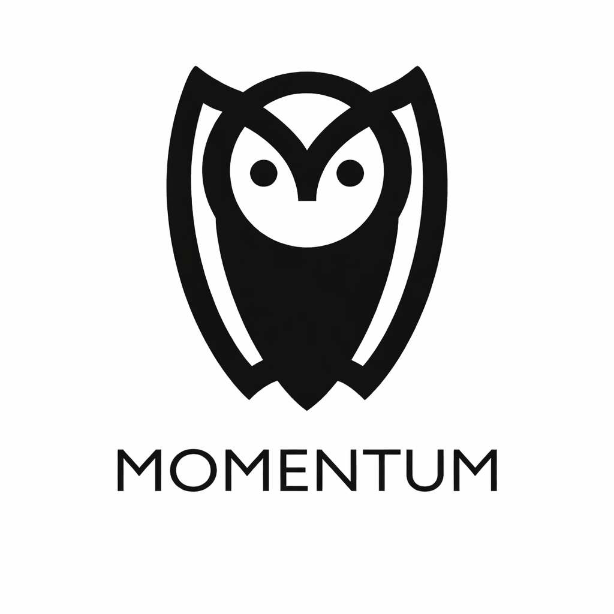
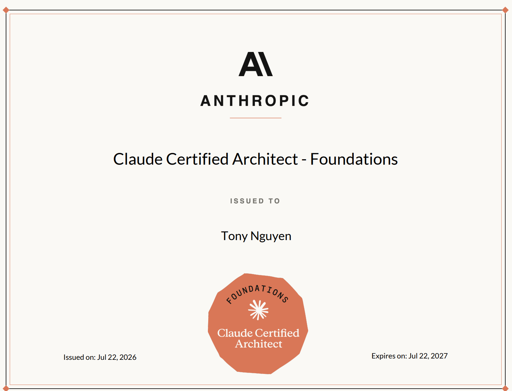
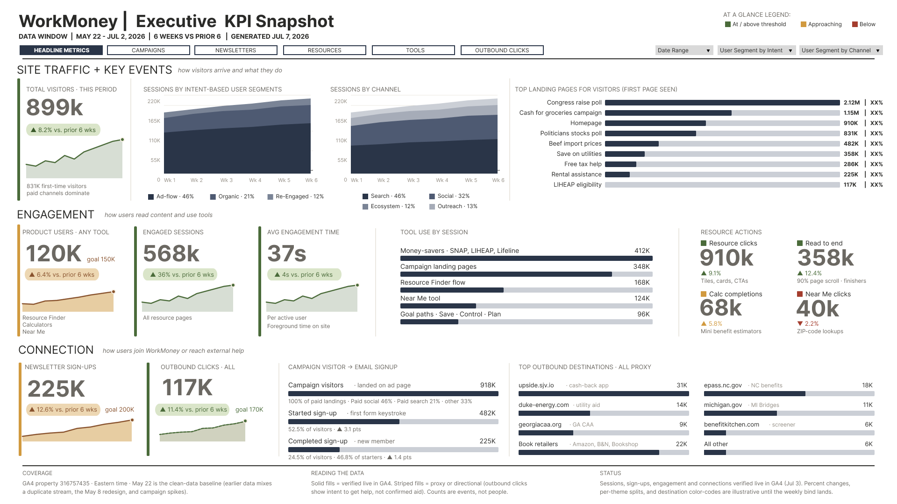
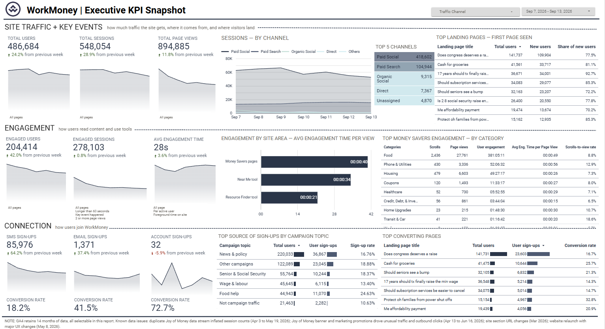
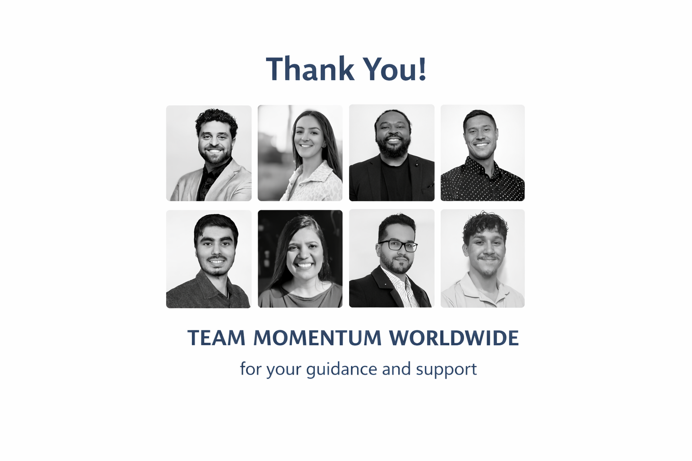

Abstract / Introduction
This website serves as my official co-op work term report for the Summer 2026 term at the University of Guelph. It covers my second work term at Momentum Worldwide, where I returned as a Data Analyst and took on greater responsibility for client-facing analytics work.
My main assignment was a project for WorkMoney, a nonprofit focused on financial empowerment. The goal was to turn website and member-engagement data into a weekly executive dashboard. I worked across discovery, metric definition, data validation, dashboard development, quality assurance, client feedback, documentation, and handoff. As the term progressed, I became the project's day-to-day analytics lead and handled most of the build from end to end, while the user-interface wireframes were developed by a teammate.
I also completed the Claude Certified Architect – Foundations certification. Together, the certification and the WorkMoney project taught me how technical systems, business questions, data limitations, and communication must work together. This report explains how I grew from completing assigned technical tasks to owning a complete client deliverable.

Information About the Employer

Momentum Worldwide is a consulting firm that delivers Salesforce, data, analytics, automation, and artificial-intelligence solutions. Its work includes Salesforce implementations and data migration, business-process improvement, analytics reporting, and support for clients that need to make better use of their systems and information.
The company works at the intersection of several areas of computer science. Client projects require an understanding of data structures, cloud platforms, system integration, quality assurance, visualization, and increasingly, agentic AI: AI systems designed to use tools and complete multi-step work under defined rules. During this term, Momentum was also investing in Claude training and certification, which gave me a structured way to study AI architecture while applying related ideas in a professional environment.
Momentum's small-team environment gave me direct access to senior staff and client stakeholders. Work was organized through Jira, regular internal check-ins, and weekly client meetings. That structure made progress and blockers visible, but the size of the team also meant that I had to work independently, explain my decisions, and take ownership when a task moved from research into delivery.
Goals
What were your goals / learning outcomes for this work term?
My three formal learning goals were:
- Technological Literacy: Complete the Claude Certified Architect – Foundations certification and develop production-oriented knowledge of agentic AI, orchestration, Claude Code, the Agent SDK, and the Model Context Protocol (MCP).
- Global Understanding: Better understand how workplace AI can support data migration, data cleanup, field mapping, quality checks, and repeatable business processes. The original measure of success was completing a data migration with Claude's assistance.
- Personal Learning Goal: Improve my understanding of Salesforce CRM and its data architecture through a structured study plan, with the Salesforce Platform App Builder certification as the intended measure of success.
Did you develop goals relating to your job tasks?
Yes. The goals reflected Momentum's work in Salesforce, data, and AI. The Claude certification connected directly to the company's investment in AI-assisted workflows. The Salesforce goals matched the migration work I had supported during my previous term. However, my main assignment this term became the WorkMoney analytics project, so the exact connection changed: I used AI most heavily for research, requirements analysis, documentation, and checking complex analytics logic rather than for completing a Salesforce migration.
What skills did you want to learn? How will these benefit your next work experience?
I wanted to deepen my technical knowledge of AI and Salesforce, but I also wanted to become better at turning an unclear business need into a working technical deliverable.
The WorkMoney project helped me learn how to ask better questions, define metrics precisely, test whether data can support a claim, and explain limitations without making the result unusable. I also became more comfortable running client discussions, prioritizing feedback, and making decisions when several technically valid options existed.
These skills will help in future software, data, or AI roles because they apply beyond any one platform. I will be able to enter an unfamiliar system, understand the real problem, evaluate the available evidence, build a practical solution, and communicate what the solution can and cannot reliably do.
What technologies did you want to work with and why?
My learning plan focused on Claude, Claude Code, the Agent SDK, and MCP because I wanted a more rigorous understanding of how AI systems use tools, divide work, manage context, and produce reliable structured output. The certification gave me a framework for thinking about those systems rather than treating AI as only a chat interface.
In the client project, I worked mainly with Google Analytics 4, Google Tag Manager, and Data Studio. I wanted to understand the full path from website behavior and event instrumentation to an executive-facing chart. Working across that path showed me that a dashboard is only as trustworthy as its definitions, filters, event setup, and documented limitations.
Reflecting on your goals, what goals did you complete?
I fully completed my first goal by passing the Claude Certified Architect – Foundations exam. I can now explain core ideas such as orchestration, tool design, MCP integration, context management, structured output, and reliability in a way that connects to practical work.
I also made meaningful progress toward the broader intent of my second goal. I used Claude to help organize source material, compare requirements, test reasoning, and support documentation during a real client engagement. This showed me both the speed AI can provide and the need to verify its output against source data and the client's actual business rules.
Beyond the formal goals, I completed a major practical objective: I led the analytics implementation of a six-page executive dashboard through review, correction, sign-off, and client handoff.

What goals were you not successful in completing and why?
I did not complete the exact success measure for my second goal because I did not finish a Salesforce data migration using Claude during this term. My responsibilities shifted toward the WorkMoney analytics project, where AI was useful but the work was centered on GA4, GTM, Data Studio, and executive reporting rather than migration.
I also did not complete the Salesforce Platform App Builder certification. Preparing for and passing the Claude certification, followed by the time required to lead the dashboard build and respond to client feedback, became the higher priority. I still consider Salesforce an important area for continued learning, but the certification remains a future goal rather than a completed outcome from this term.
Job Description
My role at Momentum Worldwide was Data Analyst. My main assignment was WorkMoney's weekly executive analytics dashboard, built in Data Studio using website data from GA4 and instrumentation information from GTM.
I began by learning how WorkMoney's website, campaigns, tools, and sign-up paths worked. I reviewed existing reports and documentation, helped refine the project scope, and translated stakeholder questions into metric definitions and dashboard requirements. The work required more than building charts because the source data contained inconsistent event names, incomplete parameters, known periods of inflated traffic, and measures that looked similar but counted different things.
My main responsibilities included:
- Reviewing GA4 and GTM data to determine which measures were reliable enough to report
- Defining metrics, filters, data-trust labels, and explanations for known limitations
- Building and refining a six-page Data Studio dashboard for weekly executive use
- Reconciling differences between event counts, user counts, sign-up measures, and campaign reporting
- Implementing date controls, comparisons, calculated fields, blended data, and page-level interactions
- Participating in client meetings and converting feedback into concrete design and logic changes
- Documenting dashboard components and completing the final ownership handoff
Over the course of the term, I became the project's day-to-day analytics lead. I handled most of the work from requirements through implementation and handoff, with the visual wireframes and user-interface direction provided by a teammate. The most interesting part of the job was balancing technical correctness with usability: leadership needed a report that was simple enough to review weekly, while I needed to ensure that every number had a defensible definition and an appropriate caveat.

Conclusions
If someone were asked to describe this work term, I would want them to say that it shows a transition from supporting technical work to owning it.
My first term at Momentum taught me how careful data preparation supports a successful system. This second term taught me what happens after the data exists: people must agree on what it means, decide whether it can be trusted, and turn it into something that supports action. A polished chart can still be misleading if its definition is unclear or its source data is weak.
Passing the Claude Architect certification strengthened my understanding of AI systems, but the WorkMoney project also taught me an equally important lesson: AI output must remain grounded in source evidence, human judgment, and the real constraints of the system being analyzed.
The most valuable outcome of this term was confidence. I learned that I can enter an unfamiliar domain, work through uncertainty, communicate directly with a client, and carry a substantial deliverable from discovery to handoff. Those skills will remain useful whether my next role is in software engineering, data, analytics, Salesforce, or AI.

Acknowledgments
I would like to thank my supervisor, Matthew Skogstad-Stubbs, and the Momentum Worldwide team for giving me the opportunity to return for a second work term and take on greater responsibility. Their support gave me room to learn, make decisions, and grow into the project-lead role over the course of the WorkMoney engagement.
I am also grateful to Kaitlyn for the dashboard wireframes and design guidance, which gave the build a clear visual direction, and to Jenny Whiley at WorkMoney for sharing the business context, answering detailed questions, and providing thoughtful feedback throughout the project.
Finally, I appreciate everyone at Momentum who supported my Claude certification preparation and helped when technical issues disrupted my original exam schedule. That encouragement made completing a difficult certification while delivering client work much more manageable.
